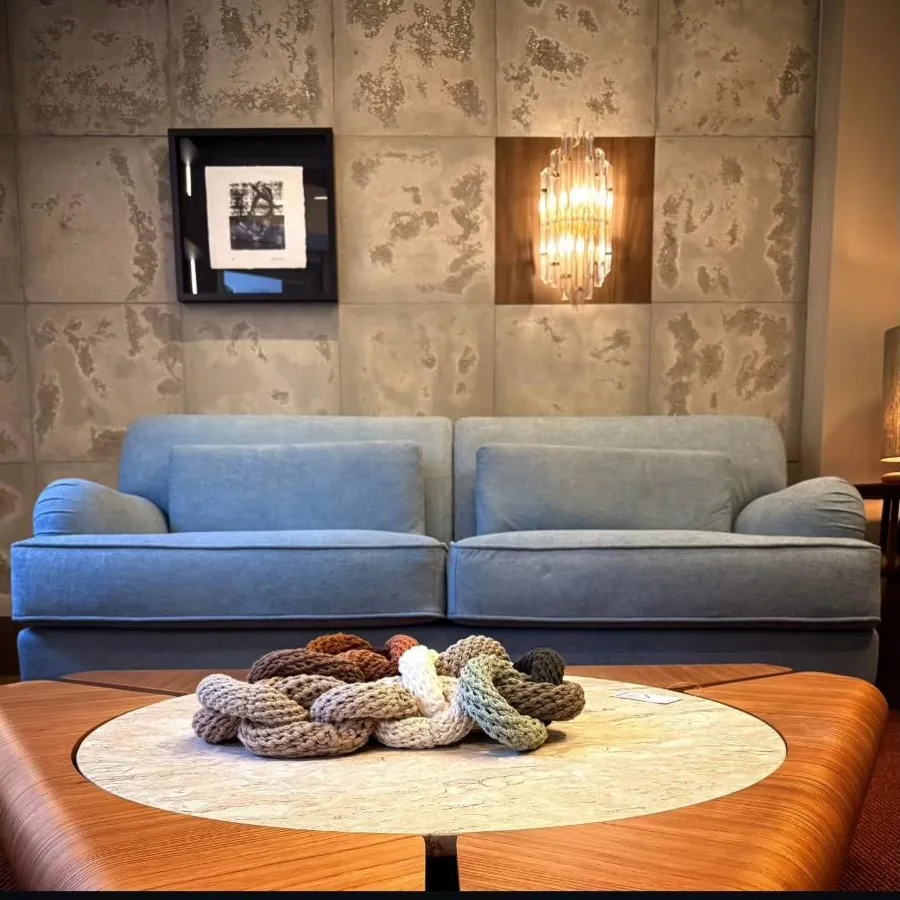
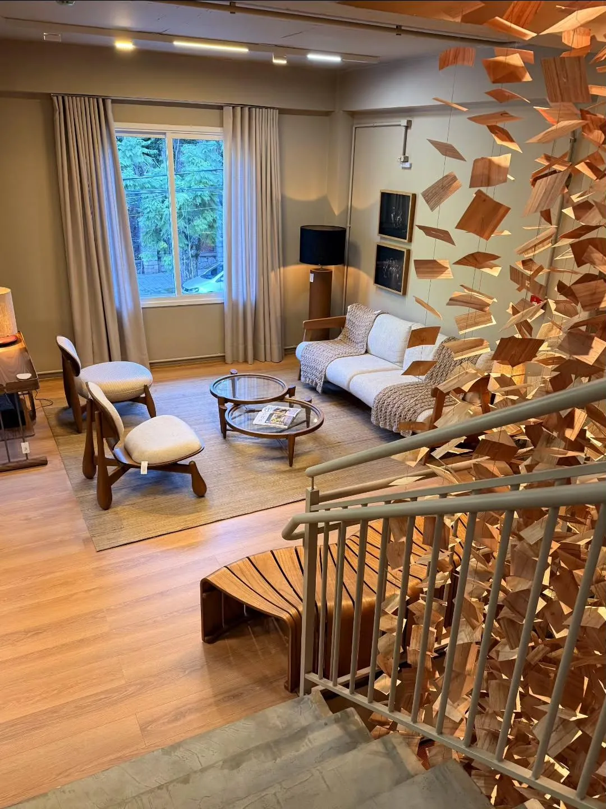
Showroom de design · Moinhos de Vento, Porto Alegre
Onde história, design e beleza se encontram
Rua Fernando Gomes, 58
Moinhos de Vento · Porto Alegre
Moinhos de Vento · Porto Alegre
Quem passa pela frente vê uma vitrine. Quem entra encontra muito mais: móveis, arte, antiguidades, tapetes e revestimentos na mesma composição.
Uma casa pensada para quem está montando um ambiente com identidade, e para os arquitetos que assinam esses projetos.
Conheça a casa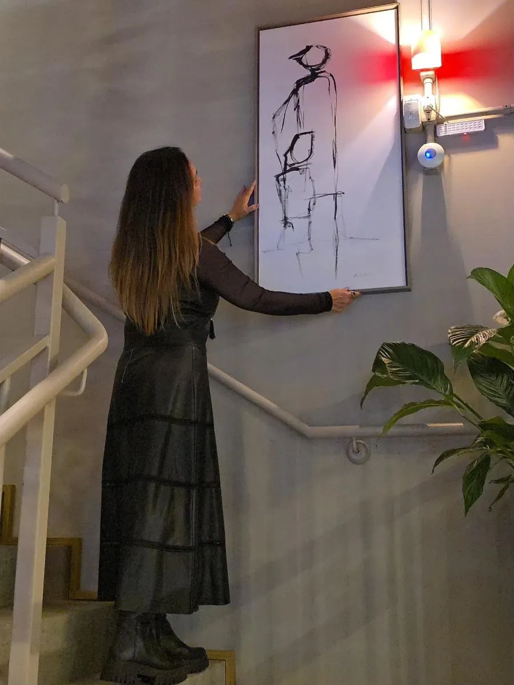
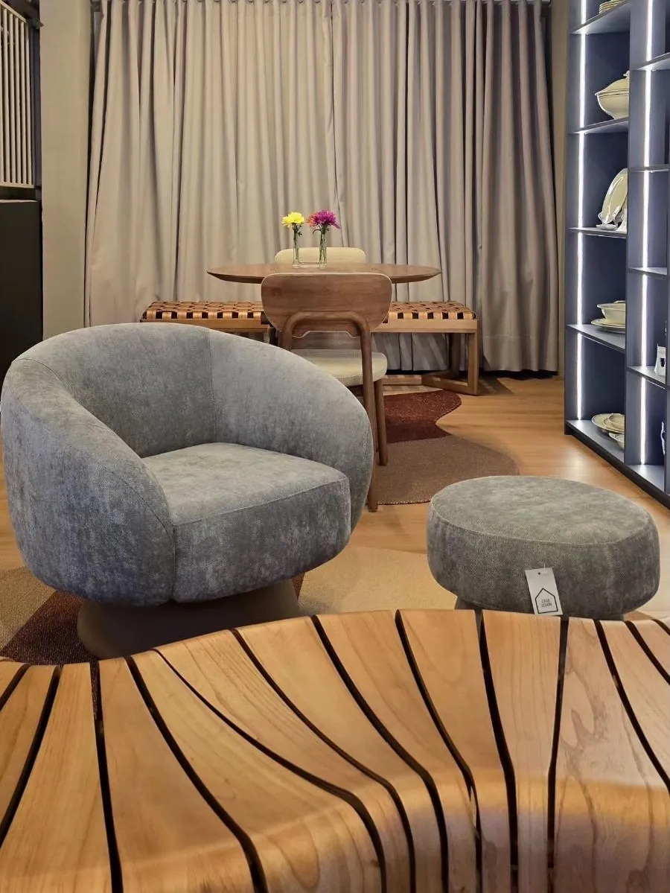
E tem mais
Tudo o que constrói
uma casa, num lugar só
Escolhas diferentes, pensadas para conversar entre si. É assim que um ambiente ganha personalidade.
Peças da casa
Para ver de perto
e levar para casa
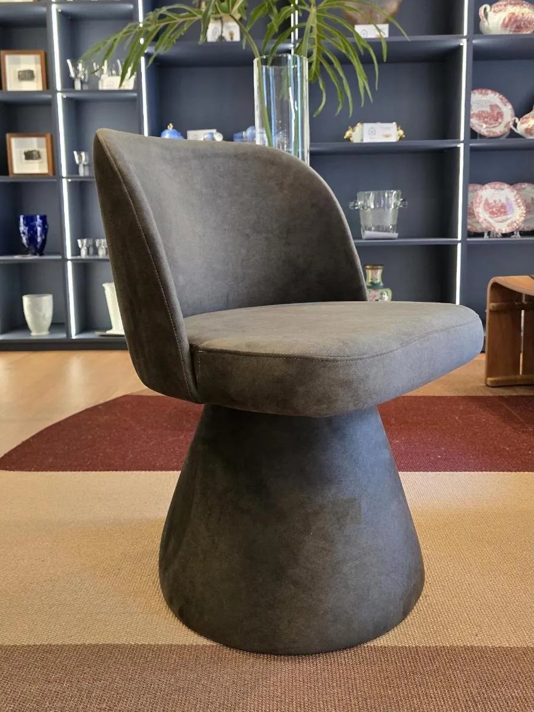
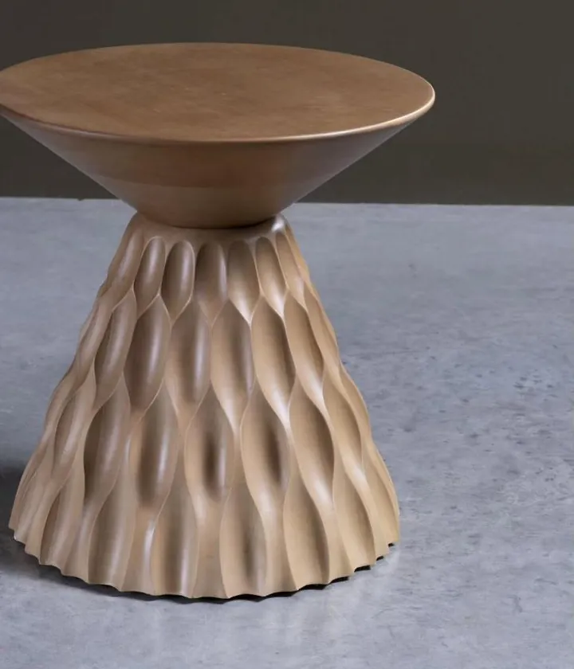
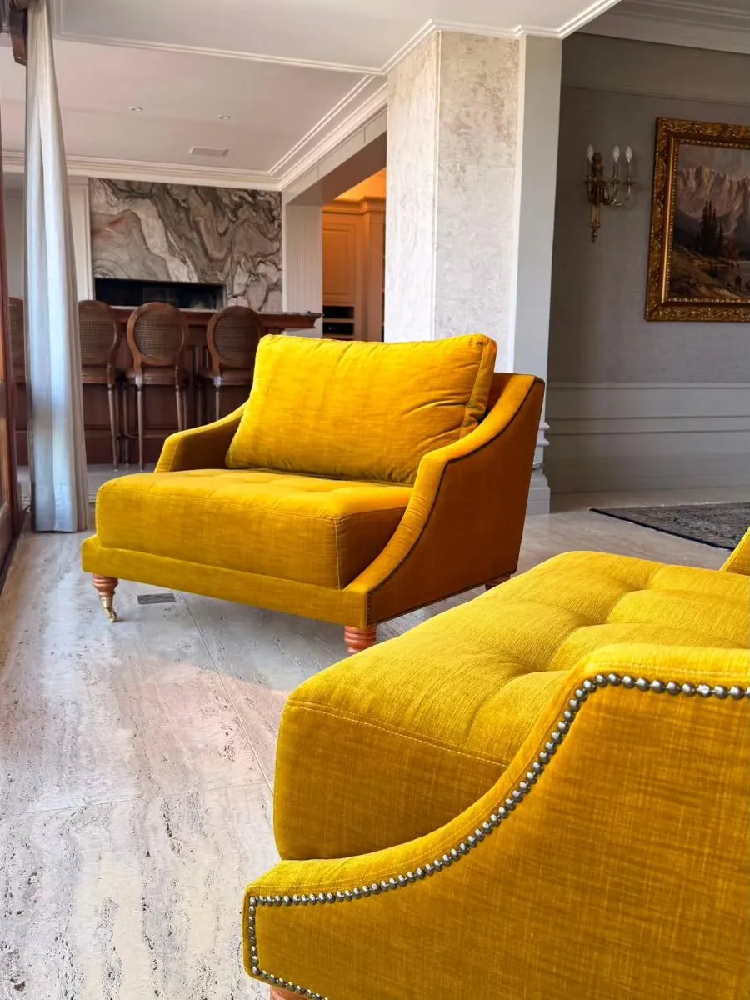
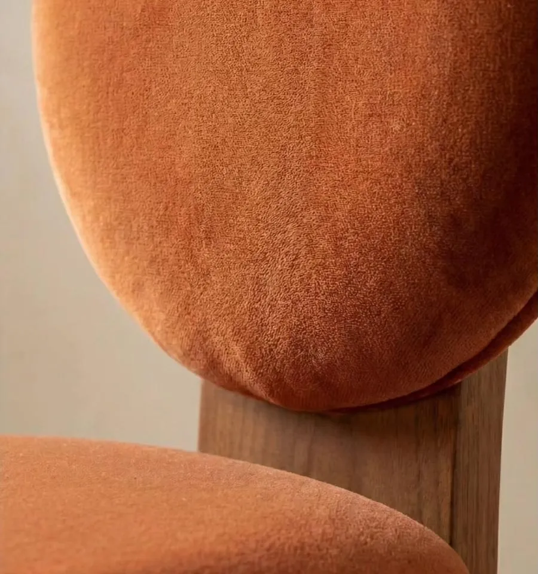
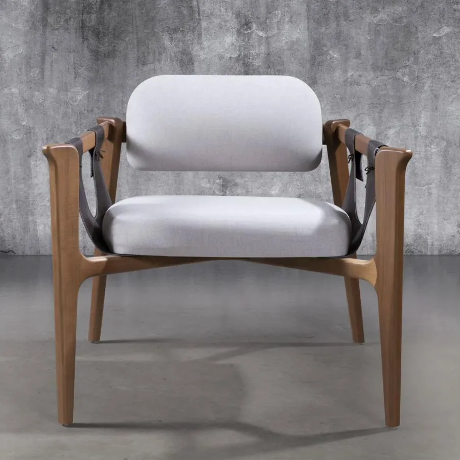
Em destaque
Cadeira Ava
R$ 1.860Reservar pelo WhatsApp
01 / 05
Valores de referência. Tecidos, acabamentos e prazos sob consulta com a equipe.
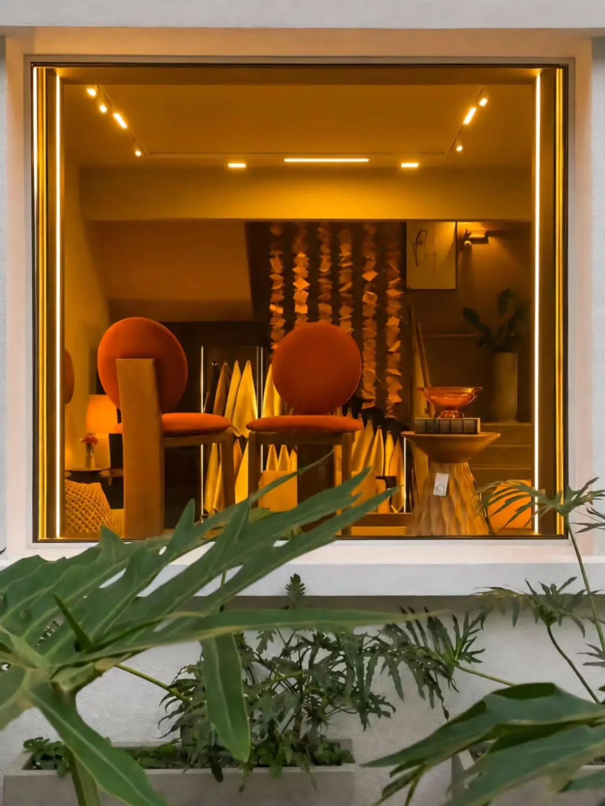
O showroom
No showroom,
a escolha muda
de escala
É aqui que dá para entender proporção, conforto e acabamento, e ver como cada peça se comporta perto das outras.
Mais do que escolher uma peça isolada, você enxerga as possibilidades para o ambiente inteiro.
- Endereço
- Rua Fernando Gomes, 58
Moinhos de Vento, Porto Alegre, RS - (51) 99373-4916
- Visitas
- Combine o melhor horário pelo WhatsApp
Para arquitetos e designers
Para projetos
que exigem
excelência
Traga seu cliente para ver as peças ao vivo, comparar tecidos e acabamentos no mostruário e fechar a composição do projeto com a nossa equipe, tomando um café.
- i.Mostruário de tecidos e acabamentos para personalizar as peças
- ii.Curadoria de arte e antiguidades para completar o ambiente
- iii.Marcenaria sob medida com a Santo de Casa
- iv.Mobiliário, tapetes e revestimentos de marcas parceiras
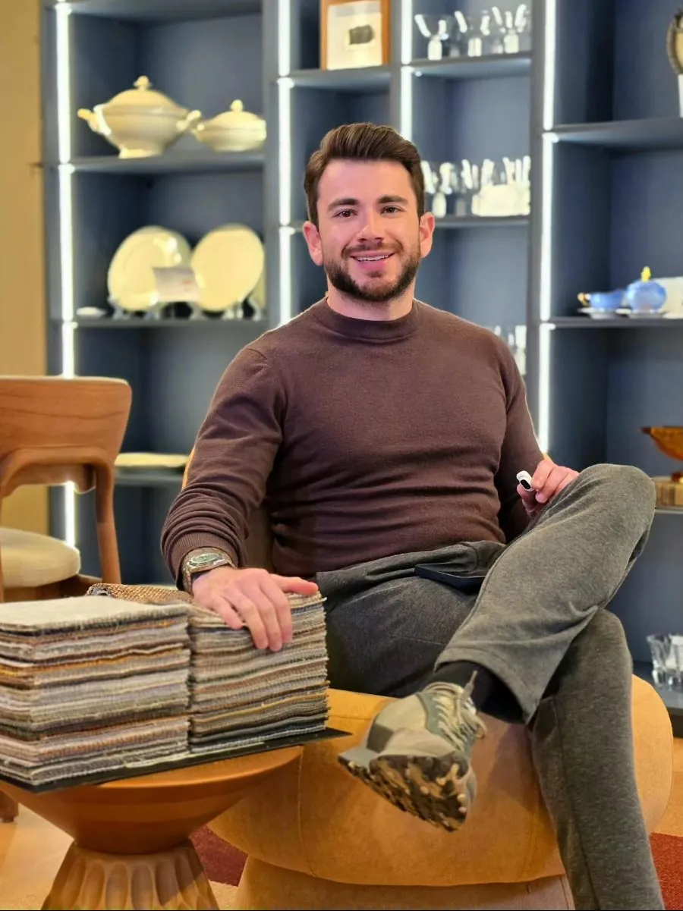
Quem divide a casa com a gente
- R. SelonkCuradoria de arte e antiguidades
- Lisi WendelArte
- PenzRevestimentos
- Santo de CasaMarcenaria
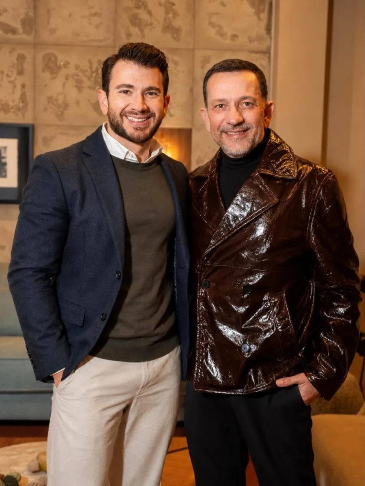
A casa
“Um projeto que nasceu de muita conversa, pesquisa e trabalho, e da vontade de construir algo com identidade.”
A Casa Schön abriu as portas em junho de 2026, no Moinhos de Vento. Reúne, num mesmo espaço, marcas e olhares diferentes com um propósito só: cuidar de cada detalhe de uma casa.
Schön quer dizer bonito, em alemão. Para a gente, quer dizer bonito que dura.
Perguntas frequentes
Antes de vir
até aqui
Onde fica a Casa Schön?
Na Rua Fernando Gomes, 58, no Moinhos de Vento, em Porto Alegre. É só combinar a visita pelo WhatsApp (51) 99373-4916.
Dá para escolher o tecido das peças?
Sim. Várias peças, como a Cadeira Ava e a Poltrona Soul, têm opções de tecidos, cores e acabamentos. No showroom você vê o mostruário ao vivo.
Vocês têm peças a pronta entrega?
Algumas peças do showroom ficam disponíveis para pronta entrega. Pergunte pelo WhatsApp quais estão disponíveis hoje.
Atendem arquitetos e designers de interiores?
Sim. A casa foi pensada para projetos de interiores, e você pode trazer seu cliente para escolher as peças junto com a equipe.
Como reservo uma peça que vi no site?
Toque em “Reservar pelo WhatsApp” na peça. Abre uma conversa com o nome dela já escrito, e a equipe responde por lá.
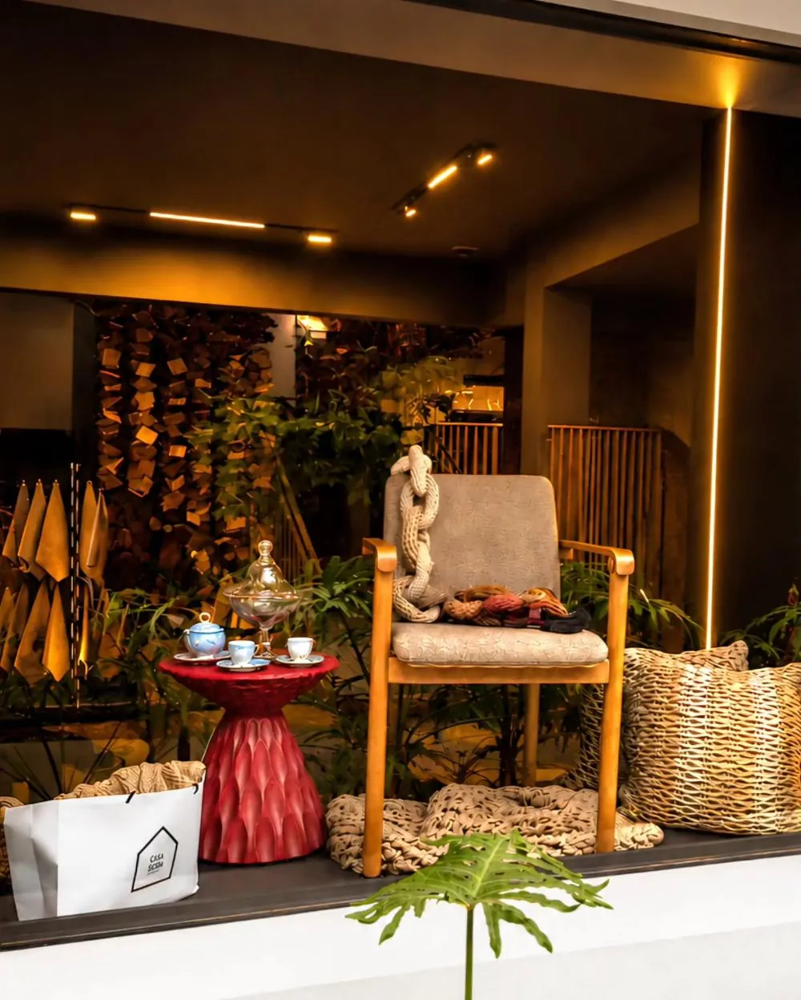